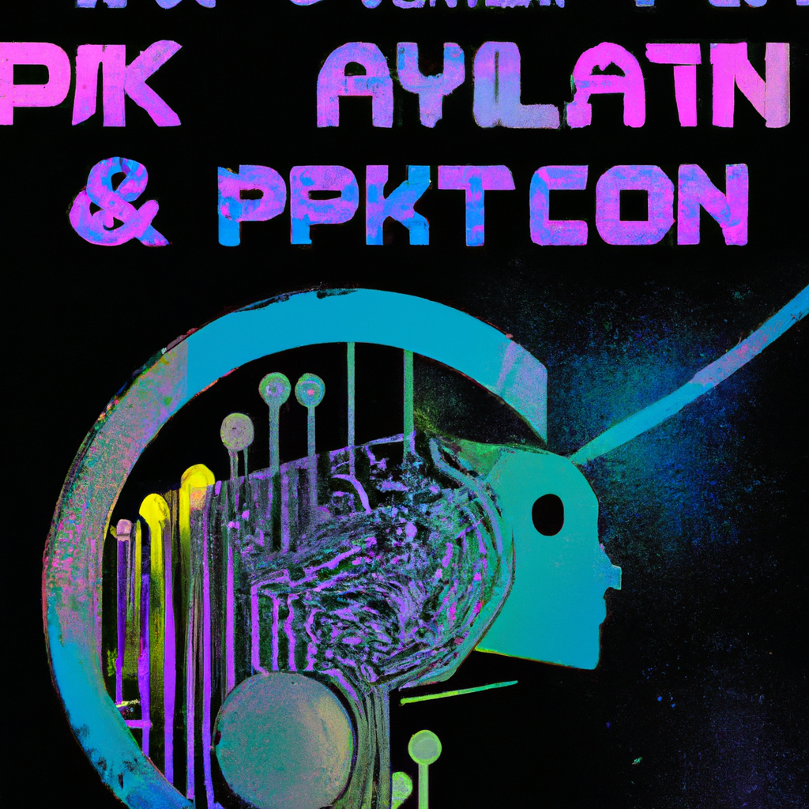

The future of python and AI
Python is an incredibly versatile and powerful programming language. It is used by developers to build complex applications, automate tasks, and create websites and mobile apps. As the demand for artificial intelligence (AI) and machine learning (ML) technologies increase, Python is becoming increasingly important in this arena.
Python's popularity in AI and ML is due to its simple syntax, ease of use, and extensive library. Python allows developers to quickly and easily create complex models with minimal effort. It can also be used to quickly and easily process large amounts of data.
Python is one of the most widely used programming languages for AI and ML projects. It can be used to build applications that can recognize images, detect objects, and make decisions. Python can also be used to develop chatbots, robotics, natural language processing (NLP), and deep learning.
In the future, Python will continue to be used in AI and ML projects. With the help of Python, developers can create more advanced applications that are capable of understanding natural language, making decisions based on complex data, and connecting to external sources.
Python is also being used in healthcare and finance. It is being used to create applications that can help diagnose diseases, process financial transactions, and provide personalized recommendations.
Python is an incredibly powerful tool and will continue to be used to build applications and automate tasks. With its wide range of libraries, ease of use, and powerful capabilities, it is no wonder that Python is quickly becoming the language of choice for AI and ML projects.